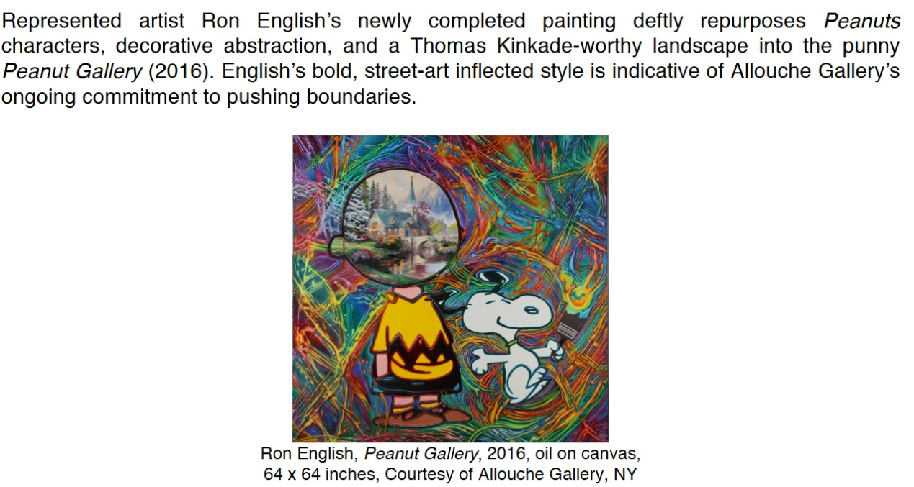

Exhibitions
Allouche Gallery Opens New Meatpacking District Space, Allouche Gallery, New York, New York, US, June 9–29, 2016.
Literature
Archival document, for “Allouche Gallery Opens New Meatpacking District Space”, Stoniene, Dalia; Allouche Gallery, June 9, 2016.

Provenance
Private collection.
Notes
The work is documented in the press release for Allouche Gallery’s June 2016 inaugural Meatpacking District exhibition, where it is described as a newly completed painting that repurposes Peanuts characters, decorative abstraction, and a Thomas Kinkade-worthy landscape.
Ancillary Documentation


